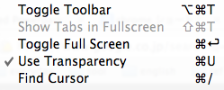
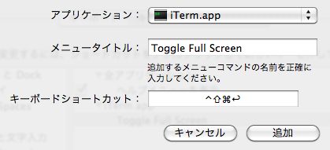
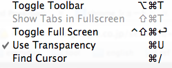

MacOSX ショートカット
ショートカットがなかなか覚えられない。使いたい・使いそうなものだけをピックアップ。
環境は MacBook Snow Leopard です。
起動(起動したらすぐに押し続ける)
セーフモードで起動するとキャッシュなどを削除するので月に一度は実行すると良いらしい。
| Option | スタートアップマネージャーを起動して、起動ディスクを選択する |
| Shift | セーフモード |
| C | CD,DVDから起動 |
| Command + S | シングルユーザーモードで起動 |
| Eject or マウスボタン or トラックパッドボタン | 強制的にリムーバブルディスク（CD・DVD）を取り出す |
スリープ、再起動、ログアウト、電源
強制再起動はどうすることもできなくなる時に使える。
| Command + Option + Eject | すぐにスリープ |
| Command + Control + Eject | アプリケーションを終了してから再起動 |
| Command + Control + Eject | 強制再起動 |
| Command + Option + Shift + Q | ログアウト（確認なし） |
| Command + Option + Shift + Esc (長押し) | 最前面のアプリケーションを強制終了 |
| Command + Option + Esc | 「強制終了」ダイアログを表示 |
ウィンドウ
| Command + F1 | 同じアプリの次のウィンドウ |
| Ctrl + Command + [F9-F12] | Spaces 切り替え |
| Command + F5 | Voice over |
| Command + Esc | Front Row |
| Command + H | アクティブアプリケーションを隠す |
| Command + , | アプリケーションの環境設定 |
| Control + F2 | メニューバーにフォーカス |
| Control + F4 | 次のウィンドウに移動 |
| Control + F6 | フローティングウィンドウに移動 |
| Control + F8 | メニューバーのメニューステータス（右上のやつ）へのフォーカス |
| Command + ` (+ Shift) | アプリケーション内の次（前）のウィンドウに移動 |
| Command + Option + T | 記号パレットの表示 |
| Command + Shift + ] (or [ ) | 次（前）のタブに移動 |
キャプチャ
普段 Screenshot Plus という Dashboard を使うので全く覚えられない。
| Command + Shift + 3 | 全画面キャプチャ |
| Command + Shift + 4 | 矩形キャプチャ |
| Command + Shift + 4 その後に Space | ウィンドウキャプチャ |
任意のアプリケーションのショートカットキーを変更する
iTerm の “Toggle Full Screen” が Command + Enter で起動してしまって誤操作が多いので、別のショートカットキーに変更します。

変更したいショートカットのメニュー名を確認しておきます。
システム環境設定 > キーボード > キーボードショートカット > アプリケーション で + を押して設定を追加します。
アプリケーションを指定、メニュー名を入力、書き換えたいショートカットキーを入力します。

iTermのメニューバーを見ると、確かに変更されていますね。
